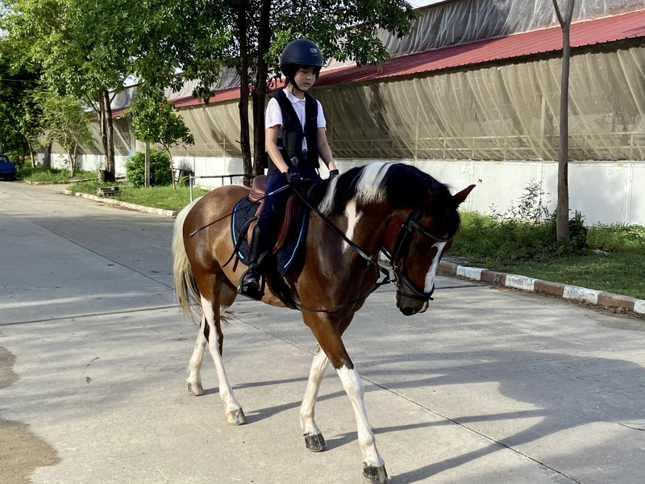

I'm Linen and I'm 15. I've been living in Bangkok my entire life, and I am currently at ICS Bangkok, or International Community School. My hobbies are Horseriding, playing Violin, and singing. I'm an ex gamer who used to be a sweat, but I'm not updated anymore. I'm also a chronic tiktok scroller! This picture is a snapshot of me with my horse, Harmony a few years back. Feel free to talk to me and educate me about makeup, skincare, good pizza great pizza, and wifty!
